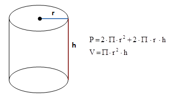

Zadanie 4
Zdefiniuj zmienne przechowujące długość promienia oraz wysokość walca. Oblicz pole i objętość figury, a następnie wyprowadź wyniki na ekran.
Do wyznaczenia wartości liczby Π użyj stałej Math.PI (stała jest zdefiniowana w standardzie języka JavaScript).
Więcej o stałej Math.PI 